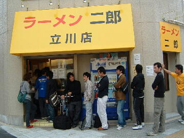
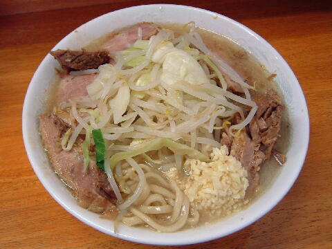

立川市 柴崎町 2-10-1
日・木
11：00〜15：00
土 11：00〜16：00
祝 11：00〜16：00

小ラーメン 750円、小ぶた増し 900円、小ぶたダブル
大ラーメン 850円、大ぶた増し 1000円、大ぶたダブル
麺少なめ 700円、少ぶた増し 850円、少ぶたダブル
黒烏龍茶 200円
店員は、店主と助手。
コショウ、一味唐辛子。
レンゲ有。ティッシュ無。名刺無。
BGMは、J-WAVE。
トッピングは、二郎標準だがヤサイコールをすると大量なので注意。
「ラーメン二郎 立川」でヤフー検索
「ラーメン二郎 立川」でヤフーリアルタイム検索
「ラーメン二郎 立川」でグーグル検索

小ぶた増し ニンニク
麺は、四角い断面の二郎にしては細い麺。量は二郎標準よりやや少な目。
ぶたは、ウデとバラのミックス。やや小ぶり。
スープは、比較的乳化傾向。
ヤサイは、モヤシ8：キャベツ2の割合でコールをすると山盛りになる。
ニンニクは、小粒に刻まれたニンニク。
ＰＣ店